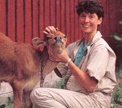
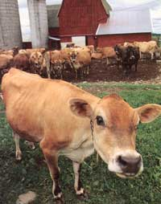
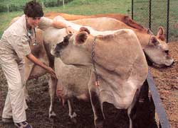
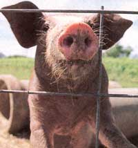
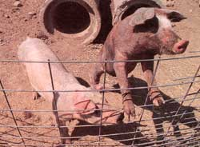

The healing power of simple daily care.
Greetings and happy fall to everyone. As Mother Earth prepares for the holiday season (It doesn't seem possible!), I continue to invite questions from our gentleperson farmers out there, and that includes our cat and dog lovers too!
I recently attended a workshop on alternative medicine and was somewhat astonished when physicians spoke about the urgent need to heal the environment as well as ourselves. I attended because I felt that the same methods of newer (alternative) healing and therapies that work for us humans may be effective for animals as well. Oddly enough, many of the therapies discussed return the focus of health care to proactive care using timeproven skills and knowledge and wellness instead of treatment of disease. The resurgence of this natural preventive medical system is based on the fact that animal, human, and environmental healing are all intertwined.
With this in mind, it is even more important today that the animals we often take for granted in our daily lives be returned to their meaningful places in society and be cared for on a different levela level akin to the care provided to animals by many of today's small farmers who depend on their cats, cows, goats, and even barn mice not only as a source of labor and food but as a source of companionship and vitality. Through this column, I hope to strengthen this special bond many of us share with our companion animals, allowing more of us to take part in the current medical renaissance of healing. Please join me and keep those questions coming!
We own a herd of Jersey cattle and have been experiencing a number of abortions in our first-calf heifers of late. l am suspicious of infections in the herd, since we took in a few new cows last year from a sale and the farm from which they came had BVD or some diarrhea problems. How do we begin to get rid of this? -S. Curran
South Bennington, VT
Most abortions are due primarily to noninfectious insults, including nutritional imbalances, genetic problems, birth environment, maternal behaviors, and management shortfalls. Infectious causes of abortions are very difficult to identify because gross lesions (those apparent to the naked eye) are not unmistakable or exact for specific bacteria, protozoa, or fungi, and it's often very hard to culture or isolate the organism.
As a producer, the first step is to keep track of the cows having losses and the time of the day, month, and year. Look at the vaccination history of the animals, how well the cows are housed and fed during their gestation, their exposure to other animals, the affected cows' ages, access to plants or chemicals, breeding methods, and type of pasture. Try to establish a pattern of losses by looking at the history of the herd. Having your veterinarian necropsy the aborted fetuses, along with performing diagnostic tests on the placenta, amniotic fluids, and the fetus itself, may help narrow the list of possible causative organisms if you suspect an infection. The success rate for identifying an infectious cause of abortion may be higher if blood is collected from the cow that aborted as well as other cattle in the herd. Consult with a cooperative extension agent or veterinarian in the laboratory where samples are sent to determine which tests to perform specific for your area and herd.
The disease you are suspicious of-Bovine Viral Diarrhea-is caused by a virus that invades the dam by entering the respiratory or gastrointestinal tract. The placenta is then invaded and exhibits a mild to severe inflammatory response which then infects the fetus. Most BVD abortions occur in the first trimester, although infection of the dam in the second trimester may also lead to abortion, severe nervous system or ocular signs in the calf, or resorption of the fetus. Serology, or blood testing, may be helpful in diagnosing the disease; however, BVD virus is frequently present in fetuses that have been aborted because of infection with other organisms.
BVD virus is the cause of sporadic abortions, so before you attempt to rid your herd of the disease, I suggest narrowing down the many causes of the abortions by careful examination of herd history and consultation with your veterinarian.
I have had several calves die very early in life. We own a small farm (10 Holstein cows), and the neighbors also had thishappen a couple of years ago. They suspected a selenium deficiency. Is this likely?
-Barry Robinson
Park City, UT
It is indeed a likely possibility, as nutritional causes of neonatal death are extremely common depending on the area of the country you are located in. Nutritional deficiencies in dairy cattle are more commonly associated with infertility and neonatal calf mortality than with abortion.
Multiple deficiencies result in acute, severe starvation for the calf. Protein deficiencies result in prematurity, dystocia (difficult delivery), neonatal mortality, and weak calf syndrome. Vitamin A is responsible for maintenance of the lining of gastrointestinal and respiratory tracts, as well as skin, ocular, and bone growth. Deficiency of vitamin A in the herd usually results in late-term abortion or birth of weak, uncoordinated, or blind calves. Iodine deficiency can cause thyroid problems manifested as hairless, timid, weak calves. Likewise, phosphorus, magnesium, and copper deficiencies may also produce weak, nonviable calves.
Selenium is responsible for upkeep of a very important enzyme in the body known as glutathione peroxidase. This enzyme prevents the formation of peroxides, which damage cell membranes. If selenium is deficient in the soil where the animals forage, this enzyme cannot function correctly and skeletal and cardiac (heart) muscle cell membranes degenerate. This condition is known as white muscle disease. Vitamin E and vitamin C deficiency result in similar problems, especially in young, rapidly growing animals. Degeneration of the heart muscle is responsible for the death of most calves with this disease.
Ironically, however, excess selenium can also cause abortion and, rarely, early neonatal death. Have a soil or feed sample analyzed to check the amount of selenium present. Blood samples from the cattle can also be analyzed for appropriate amounts of selenium and other essential trace minerals, but it appears that seasonal variations as well as lactation and life stages may affect accuracy.
We have an ancient Toggenburg goat who has a terrible smelly foot. Is this foot rot, and if so, how do we get rid of the fungus?
-Shelley Marcus
Victor, ID
You don't often see foot rot in dairy goats, but it may occur in animals that spend much of their time in wet or unsanitary yards or barns, or those that stand on wet bedding consistently. The usual first symptoms are lameness, although the feet may have an odor as well. Bacteroides nodosus and Fusobacterium necrophorum are common bacteria that are involved. Rarely are fungi involved, and if they are, they are usually secondary to the bacteria causing the initial insult. There are several types of these bacteria, each having its own virulence, or ability to cause disease. Sheep are commonly affected and the economic impact in a herd can be devastating.
Foot rot usually begins when bacteria in damp environments penetrate small fissures or cracks in the skin near the horn. These bacteria have powerful enzymes which break down the hoof wall, causing formation of fissures, sinuses, and deadened material in the keratin and underlying tissues. The feet swell and exude pus, and on occasion the entire shell around the claw may slough off. What's worse, the infective material is spread back into the soil, making the disease more likely to spread through a herd. Transmission can also occur through hoof knives and topical preparations used to treat and clean feet.
Check the foot and make sure all the feet are cleaned and well trimmed. Check for stones lodged in and around the claws. Clean the interdigital skin, checking carefully for cuts or scratches. Disinfect the tools and your hands afterwards. Start treatment by soaking the foot in warm Epsom salts water twice a day for a week. Dry the foot well after soaking. If the horn seems separated from the heal bulbs or sole, it is likely that bacteria are involved and a foot bath (copper or zinc sulfate solution) and surgical paring (performed by a veterinarian) may be required. Some animals may even need antibiotics. The best preventive treatment and long-term solution is to provide drier ground for the animals to stand upon and to eliminate rough areas with dry irritating grasses or brush that can cause tiny scratches in the skin of the feet.
Our six-year-old Arab mare attained a puncture wound to her eye approximately two months ago. We initially had trouble treating her with antibiotics prescribed by our veterinarian, but now notice a large brown film over the clear area where the injury occurred. What is it, and did we not treat it correctly?
-Lisa Conway
Gifford, FL
Injury to the cornea is common in the horse. Horses commonly scratch their cornea (the clear window of the eyeball) by rubbing on fencing, bedding, or brush and weeds; or problems may occur when dust, weeds, pollens, or other foreign bodies become embedded, causing inflammation. If the scratch contains the material, it must be removed and flushed completely. Topical broad-spectrum antimicrobials are useful and necessary for initial healing. In addition, systemic antibiotics and antiinflammatory agents may also be needed.
Horses frequently acquire what is known as a "melting ulcer" from a simple corneal scratch. These must be treated ag gressively and are considered an ocular emergency because the bacterial (or fungal) invasion is often so severe that the cornea is penetrated completely and loss of vision or even of the entire eye may occur.
The horse can be a difficult beast to treat long-term with topical ophthalmic drugs, especially if the eye is painful. If you currently see a brown pigment or film where the injury occurred, it is most likely an indication that healing has occurred. The cornea heals when new blood vessels enter the clear area from the white of the eye (sclera). The vessels deliver nutrients and new cells, often pigmented cells (hence the brown color), into the injured area to heal and cover underlying tissue. This pigmentation is not usually injurious to the eye and is left untreated unless vision is hindered substantially.
Since the horse is an animal prone to some of the worst corneal problems, however, it would behoove you to have your veterinarian examine the eye again to assure that the changes you see are not indicative of a remaining pollen grain, a ruptured cornea, or a continued fungal ulcer.
Our six-month-old, 200-pound gilt has swellings in both her hocks. We keep treating her with antibiotics, but the swelling doesn't go down. Where's the problem? She appears normal otherwise, eating and drinking is okay, and she doesn't appear lame.
- Paul Ryther
Rockford, TN
I would check the flooring first, and the pasture second. Examine the toes for any evidence of sores or bruising. Often the ground is too hard, too soft, too slippery, wet, or dry for the animals, and secondary joint problems occur. Try to assure that the legs are not getting caught in any floor or side boarding during rising, sitting, or repetitive daily acts. Check the feeds to be sure of the correct levels of nutrients.
Is it possible that other sows or gilts are riding her, showing their evidence of heat? If only the back legs are involved this may be the case. Certainly the fact that her attitude is bright, she has not lost her appetite, and water intake and output are normal seems to decrease the likelihood of any infectious disease. If the animal is not overall weak, it also is less likely that she has a nutritional or metabolic deficiency.
I would suggest separating her from the other animals, providing optimal bedding and sanitation, and cleaning the feet if possible (although if she objects to handling too much, don't further strain the muscles and joints to examine). Instead of the antibiotics, try feeding her an aspirin or two crushed and mixed in with the feed for a few days to reduce the inflammation. If improvement doesn't occur within a week, you may need to further examine the feed and check this gilt and other animals for musculoskeletal and metabolic/endocrine problems.
|
 John Reis, Photolink |
 John Reis, Photolink |
 John Reis, Photolink |
|
 John Reis, Photolink |
 John Reis, Photolink |
|